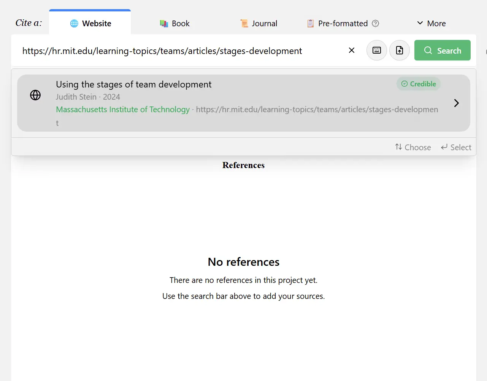
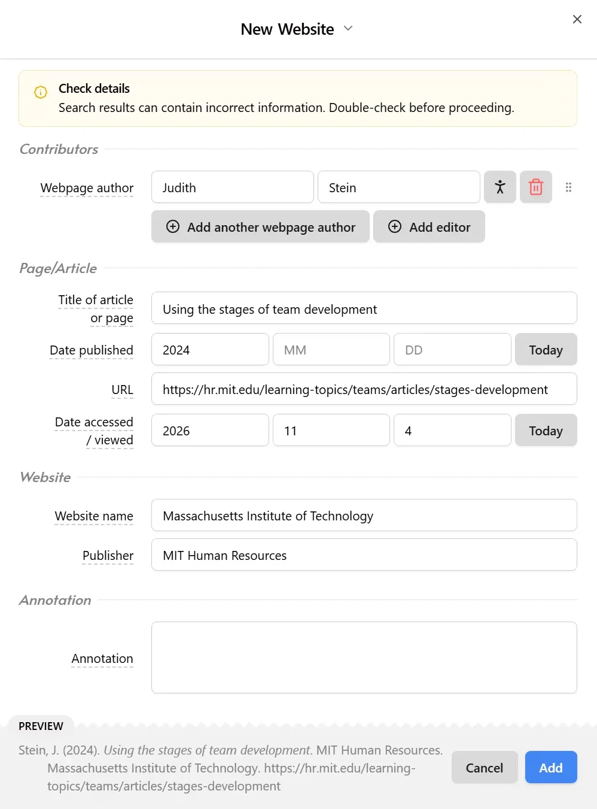
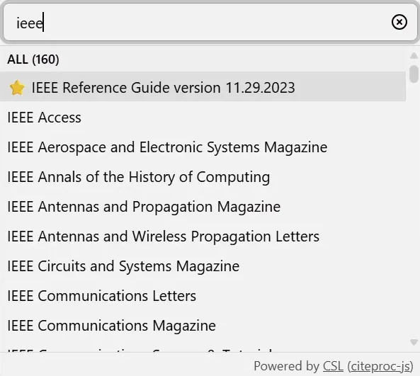
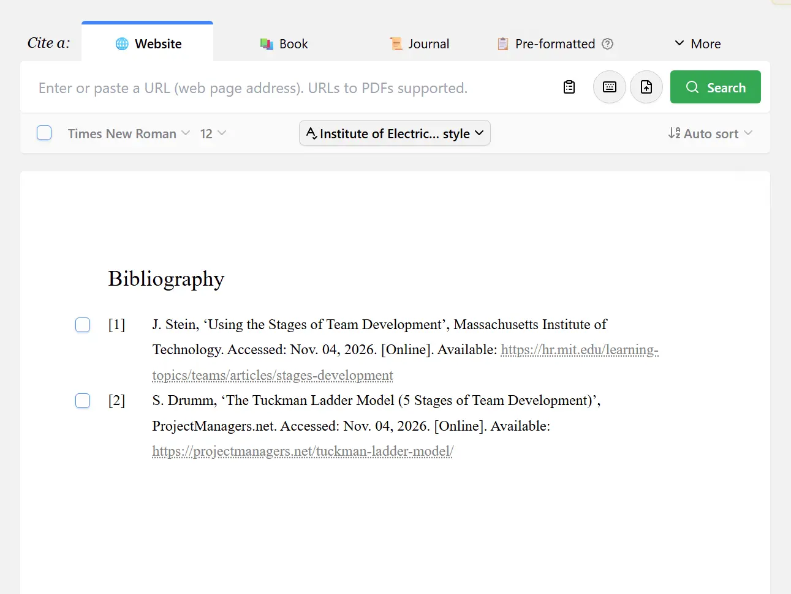
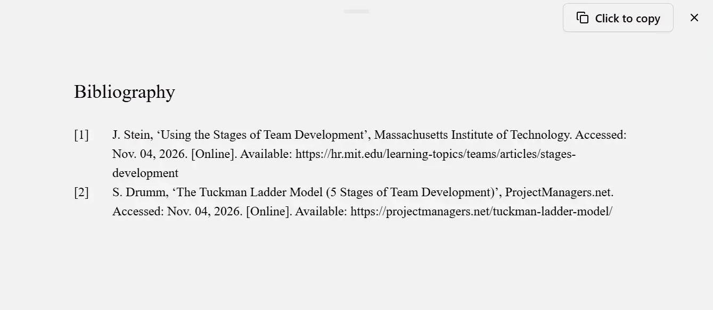

Task 3.
Tuckman's Theory & Referencing Tools
1. Tuckman's 5 Stages of Development
1.1 Introduction
In the mid-1960s, Bruce W. Tuckman recognised that many teams undergo a similar series of stages, which he identified as Forming, Storming, Norming and Performing [1].
Throughout these stages, teams will meet, disagree about priorities, settle into a shared routine, gain momentum and eventually meet their goal [2].
1.2 Stage 1: Forming
The forming stage is marked by introductions and establishing initial expectations. Team members assess each other's strengths and working styles and conflict is minimal while they focus on making a positive impression [2].
The focus here should be to define goals, structure the team and set clear roles for each team member, as they begin to build trust [1].
1.3 Stage 2: Storming
In the storming stage, interpersonal tensions may begin to surface and disagreements may emerge over direction, workload or authority. This will require thoughtful leadership to manage effectively [2].
The focus here should be to concentrate on the project goals, break them down into achievable steps and, if needed redefine them to clear up any possible confusion or frustration in the team [1].
1.4 Stage 3: Norming
In the norming stage, the team should begin to find its rhythm, roles should be better understood, communication should improve and team members should become more willing to collaborate, offer feedback and support each other [2].
There will likely be a marked increase in productivity and the team may find this is an appropriate time to evaluate their processes [1].
1.5 Stage 4: Performing
In the performing stage, the team should reach the peak of their development. Collaboration should be seamless and output consistently high. Members understand their roles clearly, trust each other's judgement and should be able to resolve issues independently [2].
The team should be able to make significant progress towards its goal and members should continue to deeper their knowledge and skills while progress is measured and celebrated [1].
1.6 Stage 5: Adjourning
Finally, in the adjourning stage, the team has completed its goal. Celebrating accomplishments in this stage reinforces a culture of recognition and respect and should allow the team member to carry positive experiences into future collaborations [2].
The focus here should be on completing any outstanding deliverables, evaluation of the team's progress and conduct and acknowledging individual contributions and accomplishments [1].
2. Automatic Referencing
For this task, the student was instructed to make use of an external referencing tool, rather than relying on the referencing tools built into Microsoft Word. The student chose to use MyBib for this task.
After navigating to the MyBib website, the user is able to paste the URL, ISDN, DOI or other identifier into the search bar and select their desired source from the results. From there, the user is able to verify that the information MyBib found for the source is correct before adding it to their references and selecting the desired referencing style, in this case IEEE. Once all sources have been added, the References generated by MyBib can be exported into Word.

Figure 1 ~ Searching for a Source on MyBib

Figure 2 ~ Verifying the Source Information is Correct

Figure 3 ~ Selecting Referencing Style

Figure 4 ~ References Generated by MyBib

Figure 5 ~ Exporting References as Text
3. References
[1] J. Stein, 'Using the Stages of Team Development', Massachusetts Institute of Technology. Accessed: Nov. 04, 2026. [Online]. Available: https://hr.mit.edu/learning-topics/teams/articles/stages-development
[2] S. Drumm, 'The Tuckman Ladder Model (5 Stages of Team Development)', ProjectManagers.net. Accessed: Nov. 04, 2026. [Online]. Available: https://projectmanagers.net/tuckman-ladder-model/